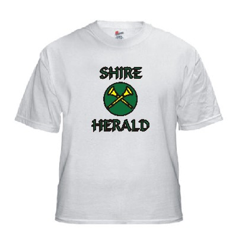
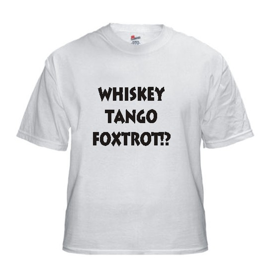

Welcome to Khevron.com
It seems my Host, Tripod, has be down for a month (as of early May, 2026), and I need a new host.
So... my content may not be available at present.
My e-mail: 
Find me on Facebook - Donovan Goertz
or Find my Heraldrydiculous Comics:

https://www.facebook.com/groups/53427836855" target=blank >Heraldrydiculous & Heraldic Proceedings on Facebook
Please bookmark this page (http://www.khevron.com) - as sub-pages may move in the future.
Here's our Travel Page for the Blogs and pages for our Asia-Australasia trip August, 2025 to May, 2026!
Khevron & Lareena's Travel pages!
 Per pale vert and sable semy of caltrops, a talbot passant argent.
Per pale vert and sable semy of caltrops, a talbot passant argent.
 Per pale vert and sable, a talbot passant and a bordure invected argent.
Per pale vert and sable, a talbot passant and a bordure invected argent.
Here I have some pages of my own and links to useful sites of Heraldic interest.
In you think "Everybody Knows", whether it's an event announcement, what to bring to feast, Traditions in the group, the truth is... |
A book from our friend Sarre on Amazon:
The The Scadian Knowne World, A.S. 50: Volume 1 and 2 (Territorial Coloring Books of the SCA)A HUGE WORK!
Cafepress.com shops:
 Khevron's Heraldrydiculous Cafe' Press Shop Heraldrydiculous, SCA, West Kingdom, Oertha and Household & High Resolution Officer Badges! We can put your arms or other design on a custom shirt or mug! Plus fun stuff for all. More added often! |
 Third Avenue Kotzebue My Alaska etc Cafe' Press Shop Alaska Town & Village Airport Three-Letter Acronym (TLA)'s, quotes and more (non-SCA). Custom TLA's and other fun stuff! |
Groups of the Knowne World Roll of Arms
19 Kingdoms full of Branch Armory!
Started January, XXXIX (2005) with William Castille.
Not working at present.
The Fairbanks/Northern Alaska SCA Branch I hail from:
The Barony of Winter's Gate
Khevron - "Tim Tam DiSaronno Slam Imaginary Herald"
Khevron's YouTube Channel
Lots of Videos - Fairbanks & Kotzebue Alaska, Travel, SCA and more!
---
The History of the Kingdom of The West
Branch Histories
A project I illustrated
Link Exchange:
Heraldic Creations Custom Heraldic Products
HGZD Hrvatsko grboslovno i zastavoslovno društvo Croatia
International Heraldry & Heralds - Web Resources
These projects would not exist without:

Armorial Gold Heraldry Clipart
If you've linked to www.khevron.com, let me know and I'll post your link or banner here!
Please set your bookmark on this page,
as the armorial and other sub-pages may, nay, WILL move about in the future.
Check our YouTube video page: Khevron's Youtube Channel
Randy Cassingham's This is True: This is True Subscription Basics

The Society for Creative Anachronism (SCA) the International Organization